Group Members
Principal Investigator
-

Xingjie Hao
Ph.D. Students
-
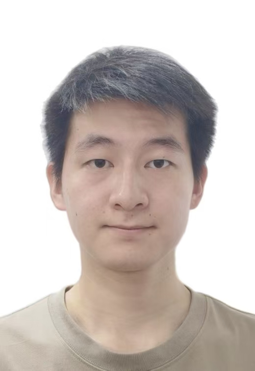
Yifan Kong (2023‑ )
-
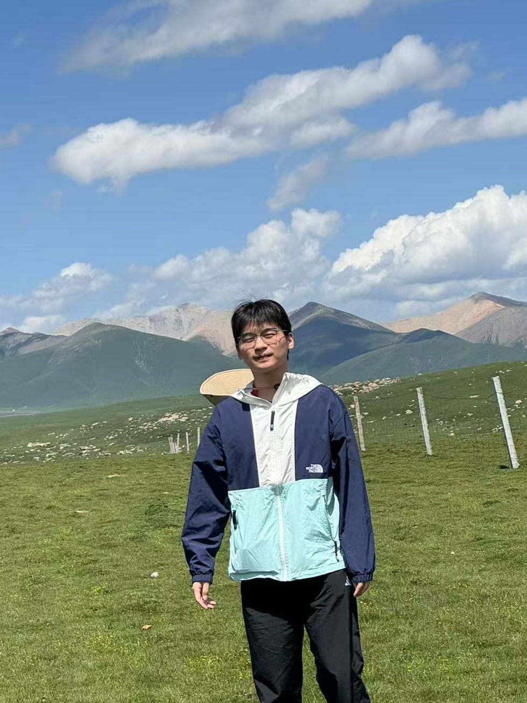
Xi Cao (2024‑ )
-
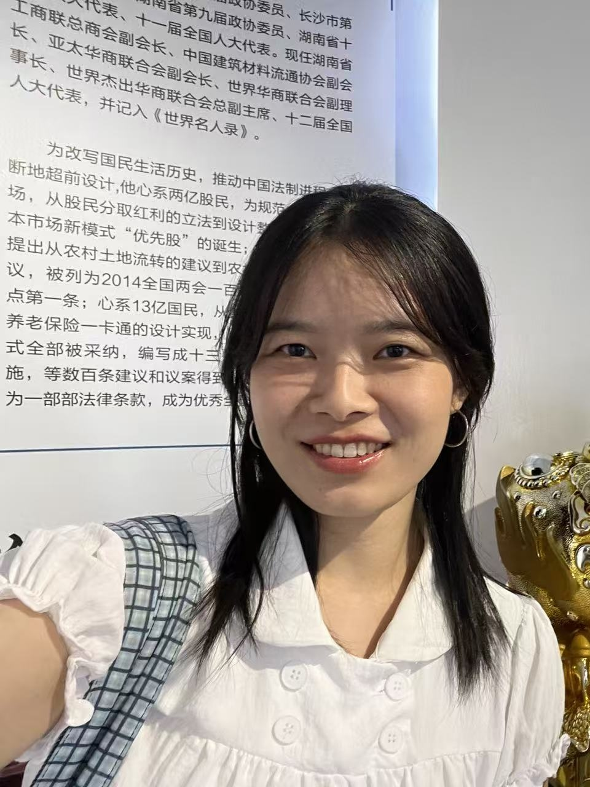
Siyu Zhu (2025‑ )
-
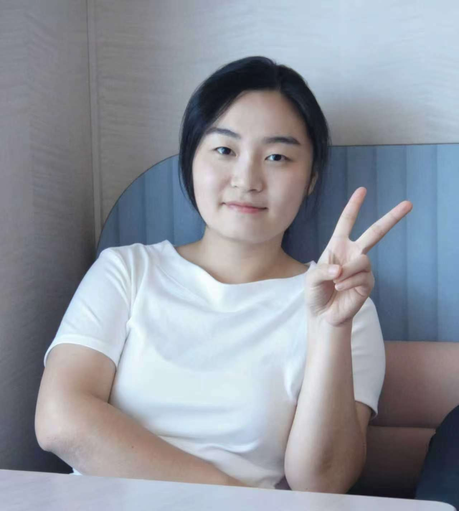
Yifei Guo (2026‑ )
-
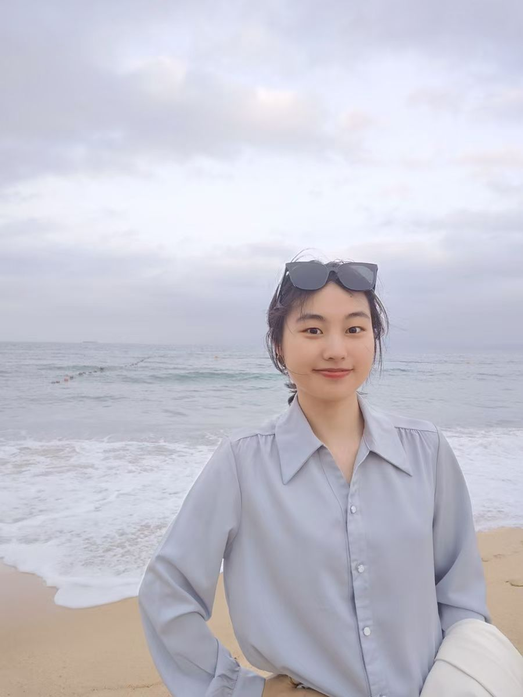
Hanbing Ji (2026‑ )
M.M. Students
-
Shizheng Xiang (2024‑ )
-
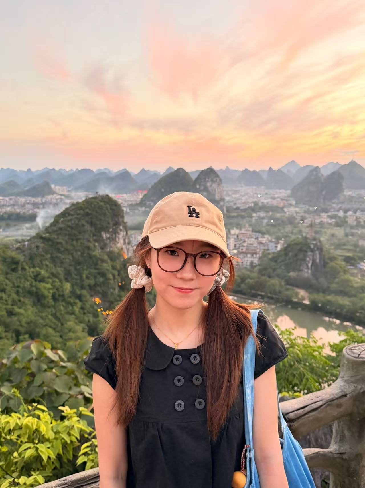
Yuge Ye (2024‑ )
-
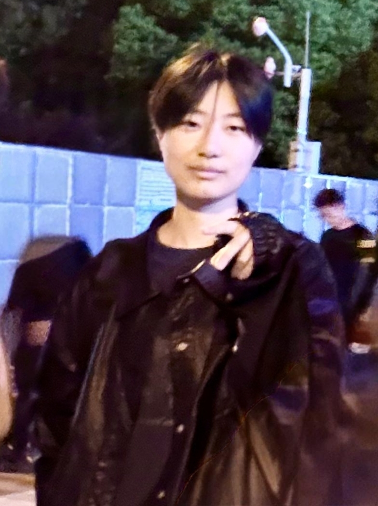
Zilin Lai (2025‑ )
-
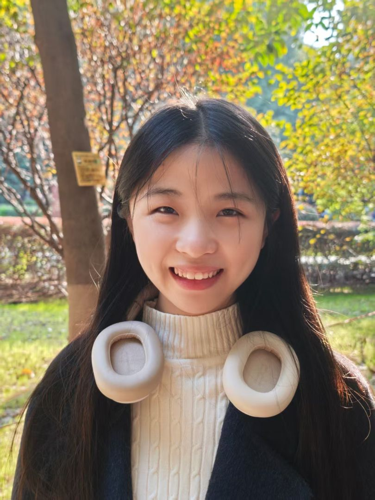
Huidan Zeng (2025‑ )
-
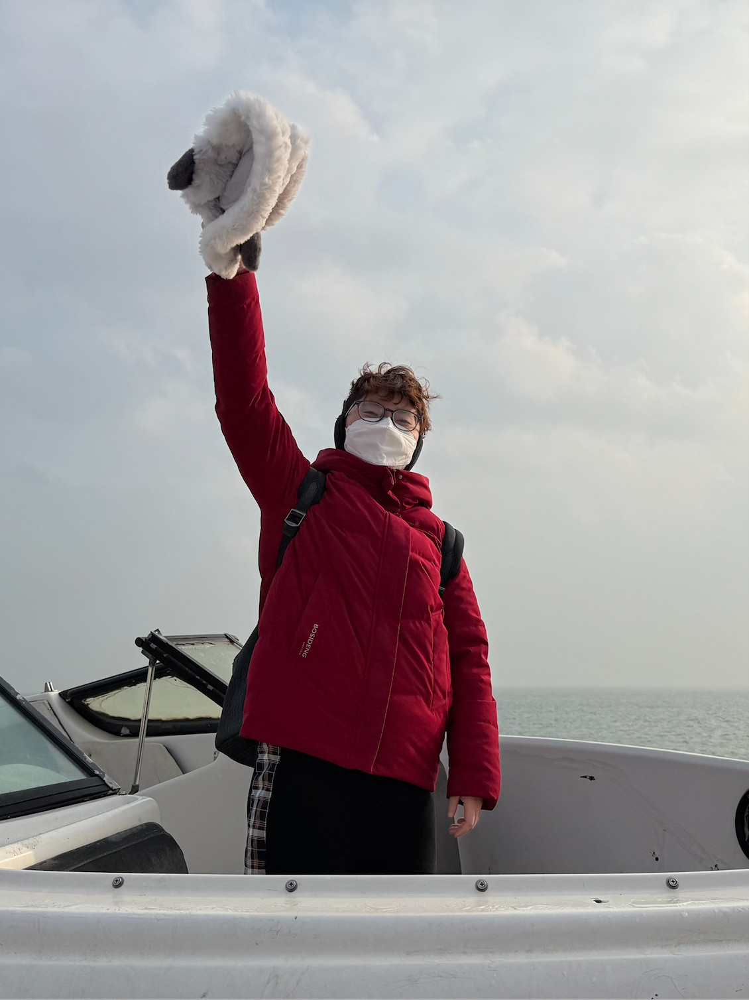
Yidan Wang (2026‑ )
-
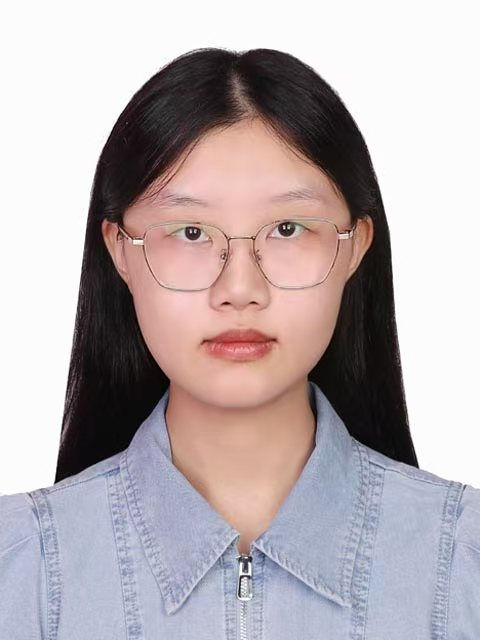
Hanyi Deng (2026‑ )
-
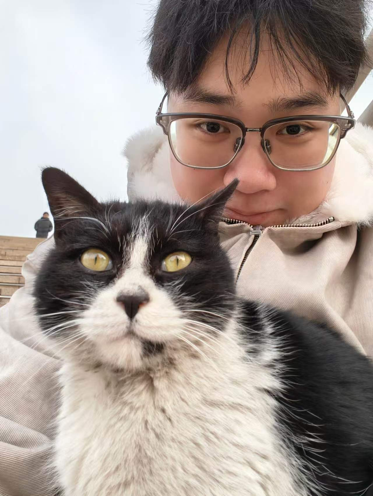
Anyi Chen (2026‑ )
-
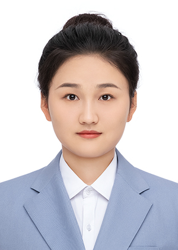
Zhihan Ren (2026‑ )
Alumni
- Yunlong Guan (2023‑2026, M.M.), now a Staff Member at CDC, Hefei.
- Zeyu Gan (2023‑2025, B.M.), now a M.S. student at The University of North Carolina, Chapel Hill, NC, USA.
- Zhonghe Shao (2022‑2026, Ph.D.), now a Postdoc at Yale University, New Haven, CT, USA.
- Si Li (2022‑2025, M.M.), now a Staff Member at CDC, Shenzhen.
- Bo Peng (2022‑2025, co‑advised M.M.), now a Ph.D. student at Macau University of Science and Technology, Macau.
- Mengya Chen (2020‑2023, M.M.), now a Research Assistant at Xiangya Hospital, Changsha.
- Qiuxuan Liu (2020‑2025, co‑advised Ph.D.), now a Biostatistician at Chia Tai Tianqing Pharmaceutical Group, Nanjing.
- Minghan Qu (2019‑2025, co‑advised Ph.D.), now a Research Assistant at Fujian Children's Hospital, Fuzhou.
- Chengguqiu Dai (2019‑2022, M.M.), now a Senior Biostatistician at Clinchoice, Wuhan.
- Xian Shi (2019‑2022, co‑advised M.M.), now a SAS Programmer at BeOne Medicines, Wuhan.
- Minghui Jiang (2019‑2024, co‑advised Ph.D.), now a Research Assistant at Tiantan Hospital, Beijing.
- Kai Wang (2018‑2021, co‑advised Ph.D.), now an Associate Director of Statistics at Zhizhi Medicine, Wuhan.